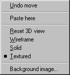

Menubar
Updated 27 Nov 2006
- QuArK Information Base
- 1. Introduction to QuArK
- 1.5. Model-editor in QuArK
|
|
Menubar
Updated 27 Nov 2006
|
Upper levels: - QuArK Information Base - 1. Introduction to QuArK - 1.5. Model-editor in QuArK |
|
1.5.2. Menubar |
[ - - ] |
New commands are constantly being added to the main menus; if there is no F1 help for some command not listed here, or you can't understand what it says, post to the QuArK messageboard for help (and a heads-up to the docco writers). Most of the commands on the menus also have hot keys (accelerators), which you can customize from Configuration at the bottom of the 'Options menu'. |
|
Index |
|
Options menu |
cdunde - 27 Nov 2006 | [ Top ] |
|
Lock to center of 3Dview : This method 'locks' the center of the grid to the center of the 3D view and rotates from the 0,0,0, point of the grid, its center. If the grid is off to another location of the view it will 'snap' back to the views center. The cursor location does not matter for dragging, the grid will remain in the views center. This makes the rotation very consistent. You can rotate and zoom in for close detail work on the model. But if you start another rotation it will jump back to the grids center and probably throw your up close position off. Lock to center of model : This function 'locks' the center of the model to the center of the view. It functions just like the 'Lock to center of 3Dview' method above based on the center of the model. However, because not all models are created at the center of their grid the method above could cause it to be near the edge of the view or completely out of view. This option compensates for that and will put the model in the proper center location of the view. The same situation will exist for up close detail work if a new rotation is started. Rotate at start position : This function is designed to give far more rotation consistency based on where the cursor is at the time it is clicked to start a rotation at some place on the model. It will then re-center that position to the center of the view to start rotating from. Unlike the 'Original 3Dview rotation' method, this would allow close up detail rotation without the model jumping back to some other location as in all of the above cases. Paste objects at screen center : Check this if you want objects that you paste into the map-view, appear in the center of the current map-view. Uncheck it, and it will paste it at the exact position as the original. Enlarge Vertices Ticks : This makes the model's ticks 1 size larger for easer viewing. Rebuild 3D views : This rebuilds the 3D views (actually all views) in the Model Editor in case of a lockup. You may have to do this a few times to clear the views up. The easiest way is to just push the HotKey 'Tab' until the views unlock and clear up. Axis XYZ letter indicator in view windows : This display s the X Y or Z indicator letter per view to associate the rotation menu buttons. These are for reference only and are not selectable with the mouse. List of Plug-ins : Opens a window which shows what plug-ins QuArK has loaded. Configuration : Takes you to the 'Configuration of QuArK'. |
|
RMB menus |
cdunde - 27 Nov 2006 | [ Top ] |
|
 Reset 3D view : If the model becomes 'lost', goes out of the 3D view, you can use this function to reset the 3D view and bring the model back to its starting position when it was first opened and based on the 'Rotation Method' you last chose to rotate the model by. Each view can be set to one of three rendering modes : Wireframe : The model mesh will be drawn as lines. This is the fastest drawing-method of the model-views. Solid : Each model is drawn in a single, solid color or shades of that color. This means that you won't be able to 'see-through' the model once it is in view. Textured : The model is displayed with its full texture applied for the finished "skinned" look. Background image... : When selected, this will open a dialog box where you can choose a .bmp image file to place and display in the 2D view that the cursor was in when the RMB was clicked. Click here for full detailed information about its functions and settings. |
|
GNU General Public License by The QuArK (Quake Army Knife) Community - http://www.planetquake.com/quark |
[ - Top - ] |

 Original 3Dview rotation : This is the way QuArK's model rotation has worked in the past.
As long as the model drag is started flat (z at 0) it rotates and tilts during rotation fine.
But if it does a hiccup during the drag with the model tilted that is when it starts to drift
off center and possibly out of the view eventually. The model can be placed anywhere in the view and
rotated from that location.
Original 3Dview rotation : This is the way QuArK's model rotation has worked in the past.
As long as the model drag is started flat (z at 0) it rotates and tilts during rotation fine.
But if it does a hiccup during the drag with the model tilted that is when it starts to drift
off center and possibly out of the view eventually. The model can be placed anywhere in the view and
rotated from that location.